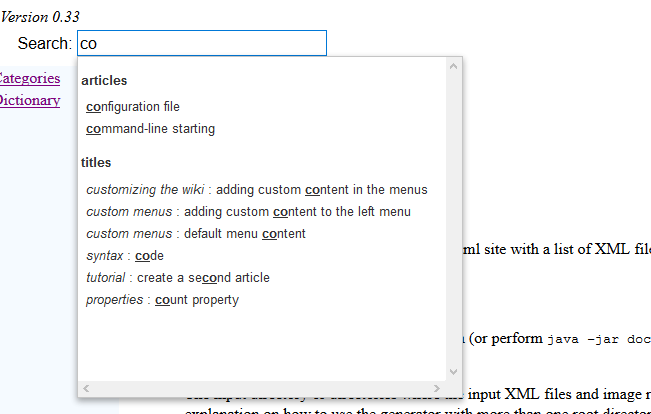
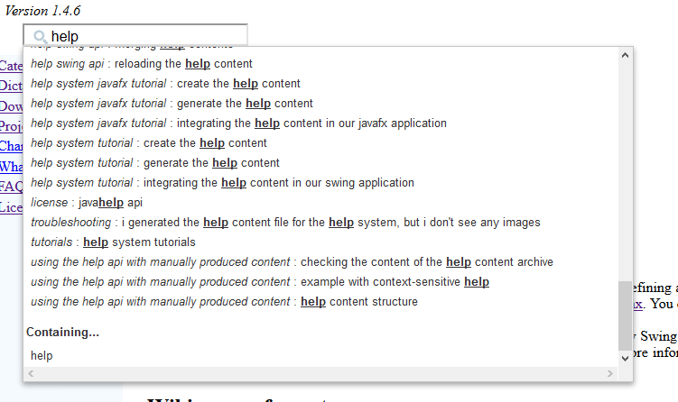
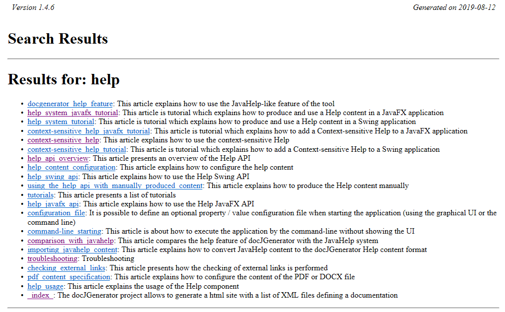

Home
Categories
Dictionary
Download
Project Details
Changes Log
What Links Here
How To
Syntax
FAQ
License
Search box
1 Search options
1.1 PageRank algorithm
1.2 Search options examples
2 Default search
2.1 Example
3 Including anchors in the search
4 Make a title not searchable
5 Full text search
5.1 Full text search compression level
5.2 Removing accents
5.3 Use the Metaphone algorithm
5.4 Example
6 Search configuration examples
7 See also
1.1 PageRank algorithm
1.2 Search options examples
2 Default search
2.1 Example
3 Including anchors in the search
4 Make a title not searchable
5 Full text search
5.1 Full text search compression level
5.2 Removing accents
5.3 Use the Metaphone algorithm
5.4 Example
6 Search configuration examples
7 See also
It is possible to show an auto-complete Search box at the top of the articles by setting the
The search options are:
The following options allow to set and configure a PageRank algorithm to sort articles in the search results:
The file used for searching in articles and titles is a javascript file which is in the resources directory.
This article is a list of articles, such as:
By default if search is enabled, all titles and chapters in articles will be searchable. However it is possible to prevent a specific chapter or article to be included in the search by using the
For example:
The Full text search uses the elasticlunr Javascript library (or its associated Java conversion for the JavaHelp implementation) to implement the search.
There are several values for the compression level:
Note that for example, for this wiki:
Metaphone is a phonetic algorithm for indexing words by their English pronunciation. It does a better job of matching words and names which sound similar.
After clicking on "help", the following page will appear:
search property in the configuration file or the command-line:- By default the Search box allow to search for the articles titles and their table of content sub-titles
- You can also search for anchors in articles
- There can be a Search box for the articles titles only
- Or there can be no Search box
Search options
Main Article: Search configuration
The search options are:
- "search": allow to add an autocomplete Search box which will be added for each article.
- "false" if there is no Search box
- "true" or "articles" if there is a Search box on the articles descriptions only
- "titles" (the default value) if there is a Search box on the articles descriptions and their table of content sub-titles
- "anchors" if there is a Search box on the articles descriptions, their titles, and their anchors
- "custom": for custom search categories
- "searchLimit": the limit on the number of results for the Search
- "pageRank" : true if the PageRank algorithm is used to sort the Search results
- "pageRankIterations": the number of iterations for the PageRank algorithm
- "searchCustomSpec": for the custom search categories specification
- "fullTextSearch": Set if a Full text search in the wiki is available. Note that for a Full text search to be available, the search must be set.
- "fullTextSearchCompressionLevel": the compression level of the full text search
- "fullTextSearchRemoveAccents": Set if accents should be removed from the full text search (true by default)
- "fullTextSearchMetaphone": Set if the Metaphone algorithm should be used for the full text search (false by default)
PageRank algorithm
Main Article: PageRank algorithm
The following options allow to set and configure a PageRank algorithm to sort articles in the search results:
- "pageRank": set the PageRank algorithm used to sort the Search results
- "pageRankIterations": the number of iterations for the PageRank algorithm, when the PageRank is using a fixed value for the iterations
- "pageRankMaxIterations": the maximum number of iterations for the PageRank algorithm, when the PageRank is using a convergence algorithm
- "pageRankConvergeDelta": the value to stop the iterations when the PageRank is using a convergence algorithm
Search options examples
To allow search for the article titles, the table of content titles, and the anchors:
search=anchors
To allow search for the article titles, the table of content titles, and add a full text search:search= titles fullTextSearch=trueTo allow search for the article titles only:
search=articles
To disable search entirely:
search=false
Default search
By default the Search box only search for article titles and table of content sub-titles. Clicking on a link will navigate to the corresponding article, title.The file used for searching in articles and titles is a javascript file which is in the resources directory.
This article is a list of articles, such as:
function getArticles() { var articles = [{"name": "a element","id": "a_element","category": "articles","title": "","titleID": "","url": "articles/article_syntaxlink.html"}, {"name": "access to external links","id": "access_to_external_links","category": "articles","title": "","titleID": "","url": "articles/article_externallinks.html"}, {"name": "algorithm","id": "algorithm","category": "articles","title": "","titleID": "","url": "articles/article_algorithm.html"}, {"name": "ant integration","id": "ant_integration","category": "articles","title": "","titleID": "","url": "articles/article_ant.html"}, {"name": "api basic tutorial","id": "api_basic_tutorial","category": "articles","title": "","titleID": "","url": "articles/article_tutorialapi.html"}, {"name": "api documentation elements basic tutorial","id": "api_documentation_elements_basic_tutorial","category": "articles","title": "","titleID": "","url": "articles/article_tutorialapidoc.html"}, ... {"name": "wiki status","id": "wiki_status","category": "titles","title": "example","titleID": "example","url": "articles/article_showstatus.html"}] return articles; }
Example

Including anchors in the search
To allow search for the article titles, the table of content titles, and the anchors:
search=anchors
In that case the Search box will search for article titles, table of content sub-titles, and anchors. Clicking on a link will navigate to the corresponding article, title, or anchor.
Make a title not searchable
Main Article: chapters and titles
By default if search is enabled, all titles and chapters in articles will be searchable. However it is possible to prevent a specific chapter or article to be included in the search by using the
searchable attribute.For example:
<article desc="the article"> <title title="first chapter"/> the first chapter <title level="2" title="second chapter"/> the second chapter <title title="examples" searchable="false"/> text inside the second chapter </article>Here the titles in the article are searchable and as such are included in the search except the "examples" title.
Full text search
If the "fullTextSearch" property is set in the configuration file or the command-line, then the search box includes a full-text search in the articles content. Clicking on a link will navigate to a Search page which will present links for all the pages which contain the searched term.The Full text search uses the elasticlunr Javascript library (or its associated Java conversion for the JavaHelp implementation) to implement the search.
Full text search compression level
By default, the JSON or Javascript file for the full text search is compressed to save space. It is possible to have a more readable file by setting the fullTextSearchCompressionLevel configuration property, or in the command-line.There are several values for the compression level:
- "false" or "0" or "minimum" or "no" does not compress the file. This format indent the file to make it more readable, but can be very large
- "true" or "1" or "normal" apply the normal compression to the file (this is the default value). This format does not indent the file and can be three times smaller than the uncompressed one
- "2" or "maximum" apply the maximum compression to the file. This format is much smaller (even than the one with the normal compression), but the json format for the serialized index is not compatible with the regular
elasticlunrJavaScript library. However, the version of the JavaScript library shipped with the generator is compatible with it, so the full-text search will still work if you use the shipped library as is
Note that for example, for this wiki:
- The size of the index for no compression is 3200 Ko
- The size of the index for the normal compression is 750 Ko
- The size of the index for the maximum compression is 310 Ko
Removing accents
It is possible to remove the accents for the full text search by setting the fullTextSearchRemoveAccents configuration property, or in the command-line. Accents are removed by default.Use the Metaphone algorithm
It is possible to use the Metaphone algorithm for the full text search by setting the fullTextSearchMetaphone configuration property, or in the command-line. The algorithm is not used by default.Metaphone is a phonetic algorithm for indexing words by their English pronunciation. It does a better job of matching words and names which sound similar.
Example

After clicking on "help", the following page will appear:

Search configuration examples
Examples with search only on articles, without full text search:java -jar docGenerator.jar -input=wiki/input -output=wiki/output -search=true java -jar docGenerator.jar -input=wiki/input -output=wiki/output -search=articlesExample with search on articles and titles, without full text search:
java -jar docGenerator.jar -input=wiki/input -output=wiki/output -search=titles
Example with search on articles and titles, with full text search:
java -jar docGenerator.jar -input=wiki/input -output=wiki/output -search=titles -fullTextSearch=true
Example with search on articles and titles, with full text search and maximum index compression:
java -jar docGenerator.jar -input=wiki/input -output=wiki/output -search=titles -fullTextSearch=true -fullTextSearchCompressionLevel=maximum
See also
- Custom search: This article explains how to customize the search to define custom search categories
×

Categories: Search